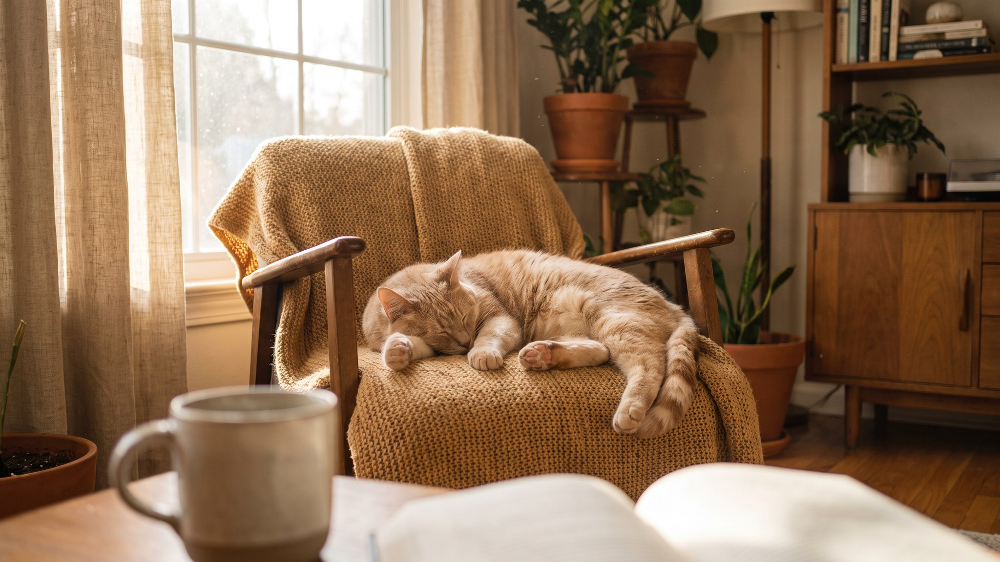

С включением отопления воздух в квартире становится суше, чем на улице зимой. Первыми это чувствуют подушечки лап: кожа грубеет, появляются мелкие трещинки. Кошка ходит на лапах и тщательно их вылизывает, так что всё, что попало между пальцами, попадёт и в рот. Ниже пошаговый осмотр и несколько простых вещей, которые можно сделать сегодня вечером.
🐾 Чтобы уход не держать в голове
AnimaLife напомнит, когда стричь когти, вычёсывать, купать и обрабатывать от паразитов, и заведёт дневник по вашему питомцу. Бесплатно.
Настроить напоминания → Настроить в MAX →
У вас iPhone? AnimaLife есть в App Store
Влажность в отапливаемой квартире обычно падает до 20–30%. Это вдвое ниже комфортного уровня. Подушечки лишены сальных желёз, поэтому увлажняются хуже, чем обычная кожа. К январю у многих кошек подушечки становятся шершавыми на ощупь, а при сильной сухости на них появляются трещины. Пушистым кошкам дополнительно достаётся: шерсть между пальцами сваливается в катышки, которые давят на кожу при каждом шаге.
Плюс зимний наполнитель. Мелкие гранулы древесного или силикагелевого наполнителя набиваются в межпальцевые промежутки и остаются там часами. Кошка их жуёт при вылизывании.
Осматривать лапу у сопротивляющейся кошки не получится без царапины, и отношения это испортит. Лучше приучать постепенно:
Не удерживайте силой и не затягивайте осмотр дольше 1–2 минут за раз.
Раз в неделю проверяйте каждую лапу. Порядок действий:
Шерсть между пальцами у длинношёрстных кошек стоит периодически подравнивать маленькими тупоконечными ножницами или безопасным триммером. Стричь нужно только то, что торчит ниже уровня подушечек: остальная шерсть там полезна. Если не уверены, обратитесь к грумеру; он сделает это за несколько минут.
Застрявший наполнитель или катышки убирайте руками или мягкой щёточкой, без резких движений. Не тяните за сваляную шерсть: это больно.
Для поддержания мягкости подушечек зимой подходят натуральные масла или специальные бальзамы для лап животных. Главное условие: состав должен быть безопасен при вылизывании, без эфирных масел и токсичных для кошек компонентов. Конкретный продукт лучше выбрать вместе с ветеринаром. Наносите тонким слоем после осмотра, дайте несколько минут впитаться: подержите кошку на руках, чтобы она не слизала сразу.
Большинство изменений на подушечках решается домашним уходом. Но есть сигналы, при которых стоит записаться к врачу:
Материал носит информационный характер и не заменяет очную консультацию ветеринара.
🐾 Заведите дневник ухода за кошкой
Вес, шерсть, обработки, прививки — всё в одном месте. А если что-то смущает, AI-ветеринар ответит круглосуточно и бесплатно.
Завести дневник → Завести в MAX →
У вас iPhone? AnimaLife есть в App Store
🐾 Понравился разбор?
Подпишитесь на канал — каждый день разбираем по одному тревожному симптому у кошек и собак: что в пределах нормы, а когда пора к врачу. Подпишитесь, чтобы не пропустить разбор, который может спасти здоровье вашего питомца.